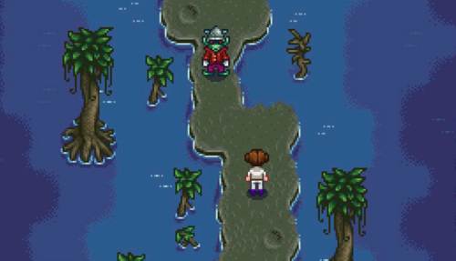

Witch's Swamp

The Witch's Swamp is an underground location that becomes accessible after completing the "Dark Talisman" Quest. The cave which leads to the swamp is located in the northeast part of the Railroad area. Found within the Witch's Swamp protected by a Henchman is the Witch's Hut.
Even though plants are growing here and fishing is possible, the game considers this location to be underground. Therefore, forageable items and artifact spots never spawn here.
Quests
The questline to access the Witch's Hut involves two quests, which become available after completing the Community Center bundles or the Joja Community Development Form. The player can trigger a cutscene at the Railroad where the Wizard will request they find a Dark Talisman, which can be found in a chest within the Mutant Bug Lair. The Mutant Bug Lair can be accessed by speaking to Krobus, who will reveal the entrance in the Sewers. After obtaining the Talisman, bring it back to the Railroad area and place it on the artifact blocking the cave. Inside the cave is a teleportation rune which leads to the Witch's Swamp.
Once inside the Witch's Swamp, the Witch's Henchman will be blocking the way to the Witch's Hut. As hinted by the Lost Book Goblins, the Henchman can be bribed into letting the player pass using Void Mayonnaise, completing the quest Goblin Problem. Recovering the Magic Ink inside the Witch's Hut then bringing the ink back to the Wizard will unlock six Wizard buildings for the Farm.
| Quest Name | Quest Text | Provided By | Requirements | Rewards |
|---|---|---|---|---|
| Dark Talisman | The Wizard asked me to retrieve the magic ink from his ex-wife's house... but to gain access I'll need a dark talisman. Enter the sewer and ask Krobus about the dark talisman. | Enter the Railroad area after completing the Community Center Bundles or the Joja Community Development Form. | Speak to Krobus to gain entrance to the Mutant Bug Lair, then retrieve the Dark Talisman. Return to the Railroad area and place the Dark Talisman on the artifact blocking the cave. |
|
| Goblin Problem | There's a goblin blocking the path to the Witch's hut. There must be some way to get him to move... Perhaps I should seek out more information on Goblins. | Completing the quest Dark Talisman | Speak to the Witch's Henchman in the Witch's Swamp, and give him a Void Mayonnaise to gain entrance to the Witch's Hut. Find the Magic Ink and return it to the Wizard. |
|
Fishing

Two unique items can be caught by fishing in the Witch's Swamp: Void Salmon and Void Mayonnaise. Catfish, Green Algae, and White Algae are also possible. The available fish are the same year-round, even though Catfish is normally unavailable during summer.
There is a 5% chance of catching a Void Mayonnaise, but only if the "Goblin Problem" quest is active and the player does not have any Void Mayonnaise in their inventory.[1]
| Time | |||||||||||||||||||||
|---|---|---|---|---|---|---|---|---|---|---|---|---|---|---|---|---|---|---|---|---|---|
| 6 | 7 | 8 | 9 | 10 | 11 | 12 | 1 | 2 | 3 | 4 | 5 | 6 | 7 | 8 | 9 | 10 | 11 | 12 | 1 | ||
| Rainy day only | |||||||||||||||||||||
References
- ↑ See Data\Locations.xnb.
History
- 1.1: Introduced.
- 1.4: Problematic water tiles fixed, making distance-from-land calculations more consistent. Fixed bug where players could move while warping out of the Witch's Swamp.
- 1.6: Reduced chance of catching Void Mayonnaise from 25% to 5%.
| Locations | |
|---|---|
| Locations | Backwoods • Beach • Bus Stop • Calico Desert • Cindersap Forest • Farm • Farm Cave • Farm Pond • Graveyard • Ginger Island • Mastery Cave • Minecart • Mines • Mountain • Mutant Bug Lair • Pelican Town • Quarry • Quarry Mine • Railroad • Secret Woods • Sewers • Skull Cavern • Summit • Tunnel • Volcano Dungeon • Witch's Swamp |